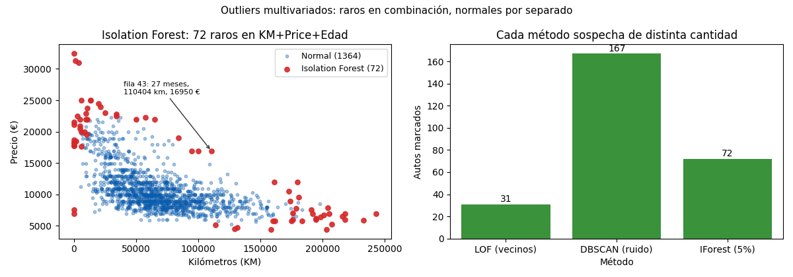

Unidad 2 · Exploración de datos · Lección 0008
Outliers multivariados: vecinos, grupos y aislamiento
Win de hoy: cazar raros en combinación (KM+Price+Edad) con tres
detectores: LOF (31),
DBSCAN (167) e
Isolation Forest (72).
1 · El caso que IQR y z no ven: la fila 43
La fila 43 es un diésel de 27 meses, 110.404 km y 16.950 €. Columna por columna pasa todos los controles de la 0007: precio bajo la valla (17.200), KM bajo la suya (153.052), edad normal. Pero juntos no cierran: ¿27 meses con 110 mil km (¡4.000 por mes!) y encima caro? Eso es un outlier multivariado: normal por separado, rarísimo en combinación. Hacen falta detectores que miren varias columnas a la vez.
2 · Paso previo: estandarizar (o KM se come todo)
Estos métodos miden distancias
entre autos. Pero KM vive cerca de 68.000 y Age_08_04 cerca de 56: sin ajuste, el KM
domina cualquier distancia y la edad no vota. La
estandarización
pone a todas en la misma cancha (media 0, desvío 1):
from sklearn.preprocessing import StandardScaler
X = StandardScaler().fit_transform(df[["KM", "Price", "Age_08_04"]])3 · Por proximidad: LOF, el que vive lejos de sus vecinos (31)
LOF (local outlier factor) mira los 20 vecinos más cercanos de cada auto: si tus vecinos están amontonados entre sí y vos lejos de ellos, sos raro. Es local: un auto puede estar lejos del centro y ser normal si su barrio también es disperso.
from sklearn.neighbors import LocalOutlierFactor
lof = LocalOutlierFactor(n_neighbors=20).fit_predict(X) == -1
print(lof.sum()) # 31 (la fila 43 está entre ellos)4 · Por clústeres: DBSCAN, el que no entra en ningún grupo (167)
DBSCAN agrupa por densidad: junta autos pegados (eps = 0,35 de radio,
mínimo 10 vecinos) y al que no entra en ningún grupo lo declara
ruido.
Acá forma 3 grupos y deja 167 ruidos afuera (11,6 %: el más sospechoso de los tres).
from sklearn.cluster import DBSCAN
db = DBSCAN(eps=0.35, min_samples=10).fit(X).labels_ == -1
print(db.sum()) # 167 ruidos en 3 grupos5 · Por aislamiento: Isolation Forest, lo raro se aísla rápido (72)
Isolation Forest hace lo inverso: corta el espacio al azar una y otra vez. Un auto normal,
rodeado de otros, tarda muchos cortes en quedar solo; uno raro se aísla en 2–3 cortes. Vos elegís qué porcentaje
sospechar con contamination (acá 5 % → 72 autos).
from sklearn.ensemble import IsolationForest
iso = IsolationForest(contamination=0.05, random_state=42).fit_predict(X) == -1
print(iso.sum()) # 72 (la fila 43 también está)6 · Comparar: tres lentes, tres listas (16 en las tres)
| Método | Marca | Idea en una línea |
|---|---|---|
| LOF (vecinos) | 31 | Raro = más aislado que su barrio |
| DBSCAN (ruido) | 167 | Raro = no entra en ningún grupo |
| Isolation Forest | 72 | Raro = se aísla con pocos cortes |
Solo 16 autos están en las tres listas (la fila 43 es uno): cada método mira distinto y sospecha distinto. No hay “el” detector correcto; hay consenso y criterio. Cierre de Unidad 2: limpiar (0004), dar forma (0005), explorar (0006) y cazar rarezas (0007–0008). Recién ahora los datos están listos para contar historias (U3) y modelar (U5–U9).
7 · Figura: los 72 de Isolation Forest y el conteo

Regenerar la figura (mismo resultado versionado en assets/img/toyota/):
python scripts/make_figures.py --only outliers-multivariados-lof-dbscan8 · Quiz (auto-chequeo inmediato)
9 · Fuente primaria y cierre
Para profundizar (1 fuente): Géron, Hands-On Machine Learning — capítulos de entrenamiento, detección de anomalías y aprendizaje no supervisado con scikit-learn (O'Reilly, también en RESOURCES.md del curso).
¿Algo no quedó claro? Preguntame al agente: por qué estandarizar antes de medir distancias, cómo elegir k/eps/contamination, o qué hacer cuando los métodos no se ponen de acuerdo.